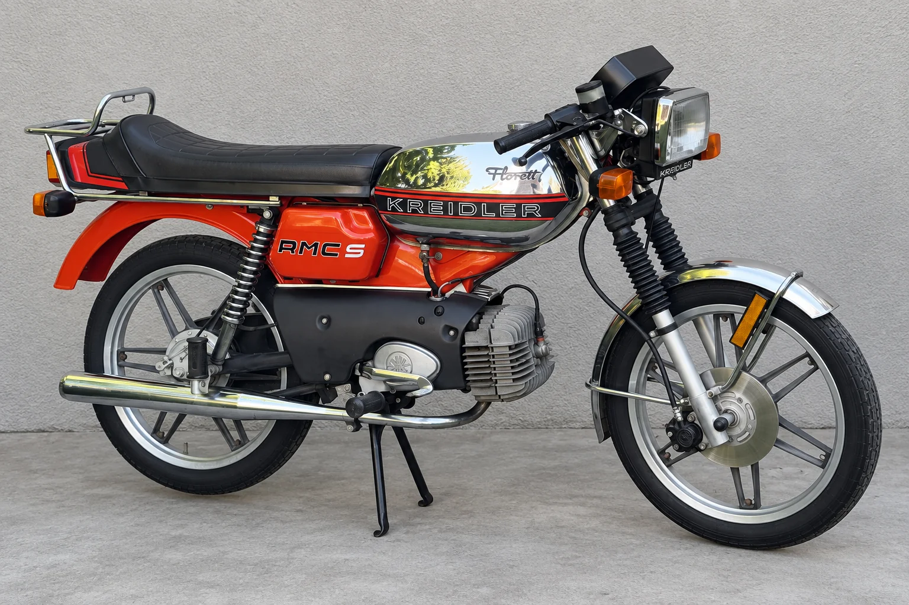
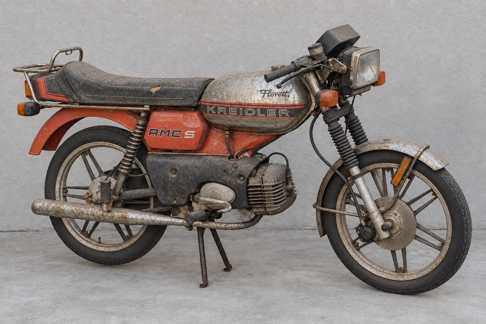

Ankauf & Verkauf
Wir suchen klassische Zweiräder in jedem Zustand. Wenn Sie einen Klassiker kaufen möchten, sprechen wir persönlich über passende Fahrzeuge und ihre Verfügbarkeit.
Mopeds und Motorräder mit Charakter. Vom ersten Fund bis zur nächsten Ausfahrt.
Manchmal braucht Freiheit nur zwei Räder. Wir begeistern uns für klassische Motorräder, Mopeds und die Geschichten, die mit ihnen unterwegs sind.
PUCH X30 TURBOEin Klassiker aus unserer Bildwelt.
Zweirad anbietenWir suchen klassische Zweiräder in jedem Zustand. Wenn Sie einen Klassiker kaufen möchten, sprechen wir persönlich über passende Fahrzeuge und ihre Verfügbarkeit.
Ein guter Neustart beginnt mit einer ehrlichen Bestandsaufnahme. Gemeinsam schauen wir auf Substanz, fehlende Teile und sinnvolle Schritte zurück auf die Straße.
Sie haben ein bestimmtes Modell im Kopf? Erzählen Sie uns davon. Wir besprechen Ihre Wünsche und worauf es bei der Auswahl ankommt.
Staubig, nicht fahrbereit oder schon gepflegt: Wir suchen Klassiker in jedem Zustand. Mit Leidenschaft und dem Blick fürs Detail bringen wir sie wieder auf die Straße.


Auch ein lange abgestelltes Zweirad kann der Anfang einer neuen Geschichte sein.
Fahrzeug verkaufen